Radio y alta energía
Dos extremos del espectro electromagnético: antenas, interferometría, EHT, Compton, Cherenkov y el mapa multibanda del cielo.
Para cubrir el EM completo hacen falta tecnologías radicalmente distintas. En radio la coherencia de fase importa; en gamma no puedes «reflejar» como en óptico.
Ventanas atmosféricas
Óptico visible + radio transparentes; UV/X/γ y gran parte del IR bloqueados (protección + motivación espacial). Sub-mm sensible a H₂O → ALMA en Atacama.
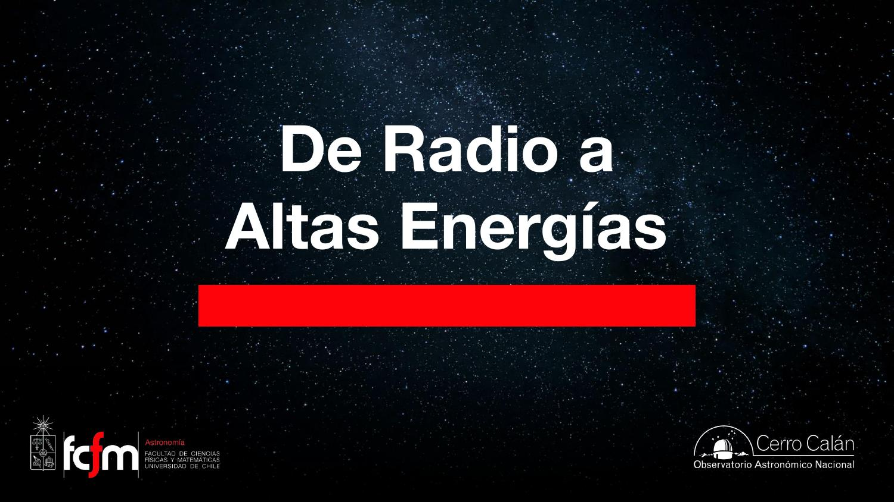
Primeras antenas
1932: Karl Jansky — primer radiotelescopio. Jocelyn Bell: púlsares con antena tipo «cerca» (cables). SKA pathfinders: dipolos verticales.
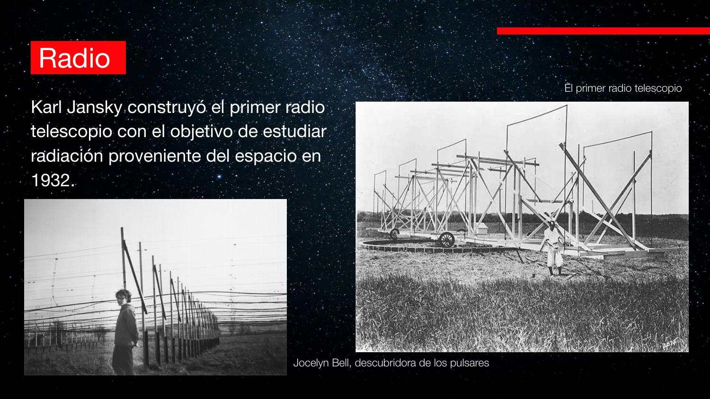
Plato parabólico y coherencia de fase
Parábola: todos los caminos ópticos iguales → ondas en fase en el foco (interferencia constructiva). Fuera del eje → destructiva → haz dirigido.
Distinto del óptico: en radio importa sumar ondas coherentes, no solo «recolectar fotones».
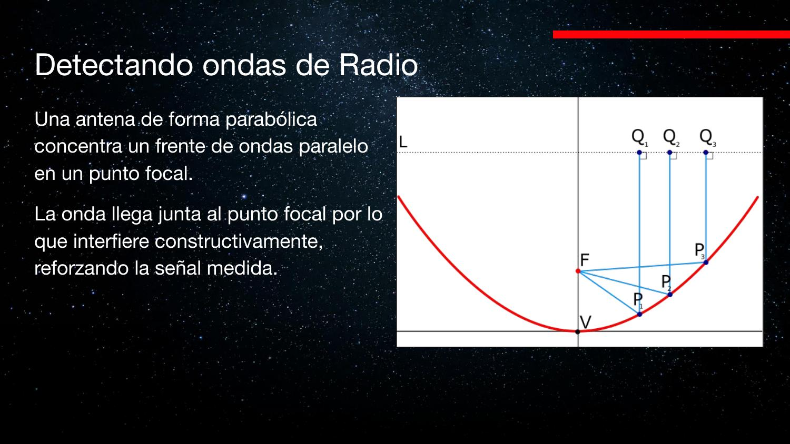
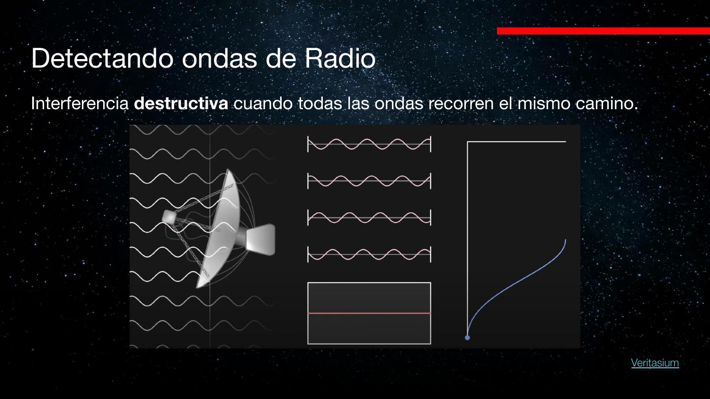
Barrido y resolución
Una antena debe barrer el cielo pixel a pixel. Resolución θ ≈ 1,22 λ/D pero λ radio es enorme → θ muy grande (arcmin–arcsec).
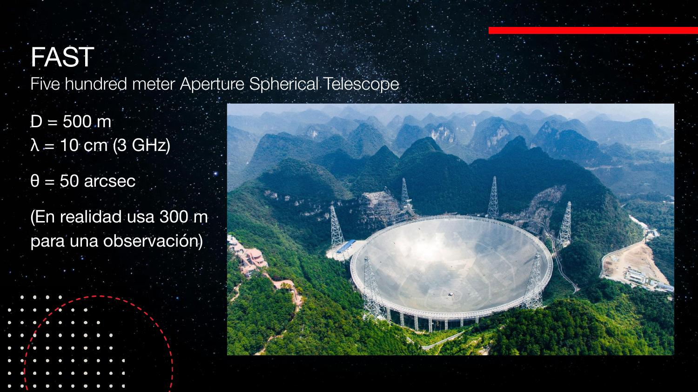
FAST (500 m)
Medio km de diámetro fijo; usa ~300 m efectivos según pointing. Área recolectora enorme → objetos débiles, pero resolución limitada.
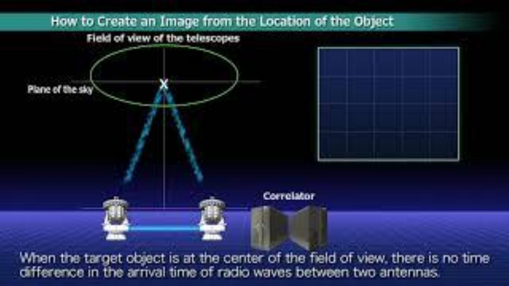
Interferometría
D efectivo = separación entre antenas (línea de base), no tamaño del plato. Correlador digital combina señales con fase conocida. 2 antenas → ambigüedad (franjas); más antenas → imagen única.
ALMA: 50×12 m + correlador a 5000 m; líneas de base hasta 16 km; λ hasta 0,3 mm. Área recolectora = suma de platos, no el disco completo.
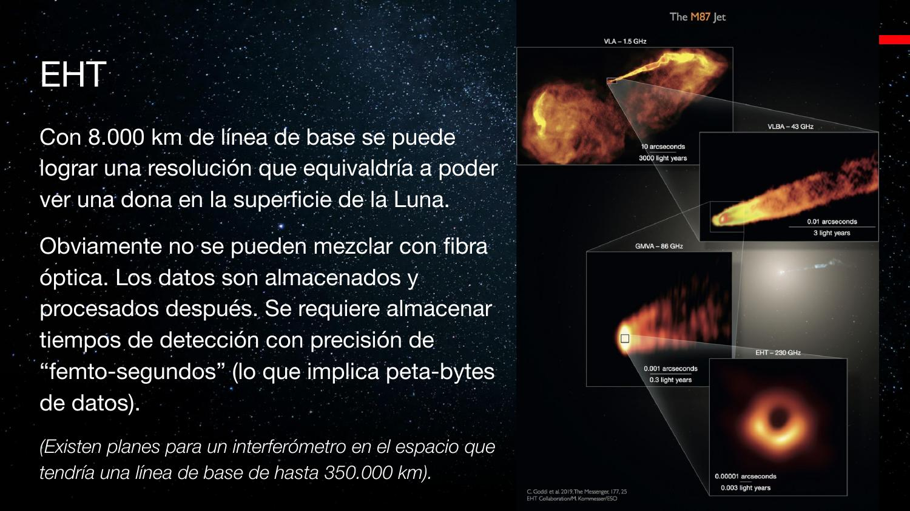
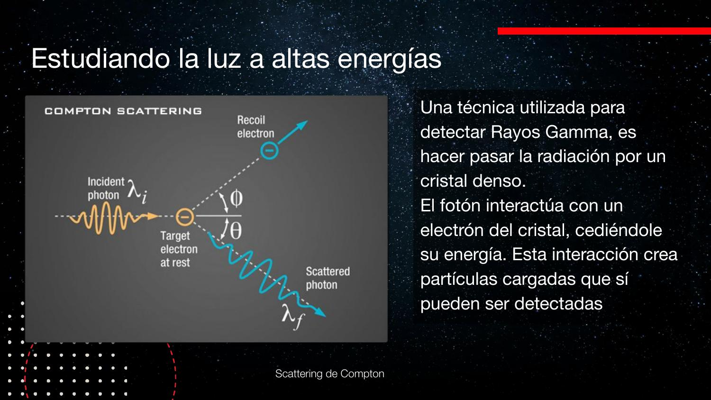
EHT (Very Long Baseline Interferometry)
Telescopios en la Tierra graban señal en discos con timestamps de femtosegundos → correlación offline. Línea de base ~diámetro terrestre (~8000 km) → imagen del agujero negro en M87.

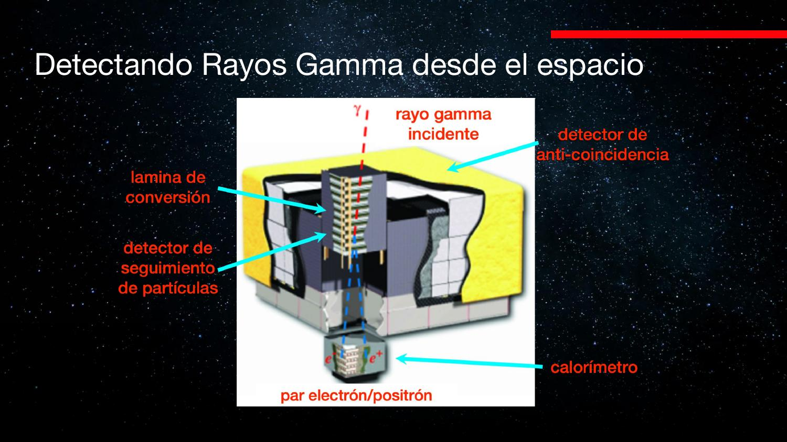
Alta energía: Compton y conteo de fotones
λ tan corta que no hay espejo reflector útil. Compton: fotón choca con electrón libre en cristal → detectas la partícula cargada, no el γ original. Fermi-LAT: ~700 000 fotones en 7 años (mapa de todo el cielo).
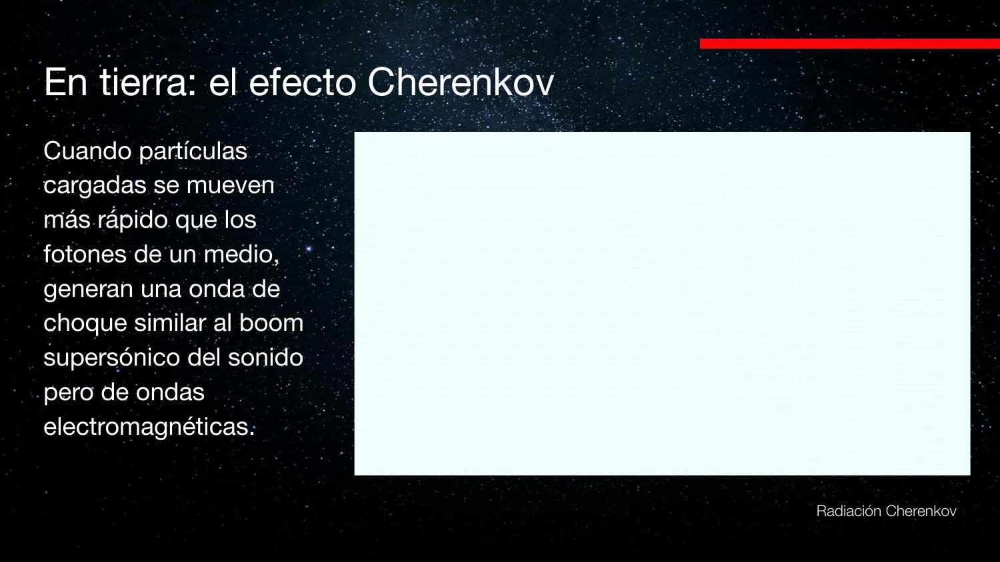
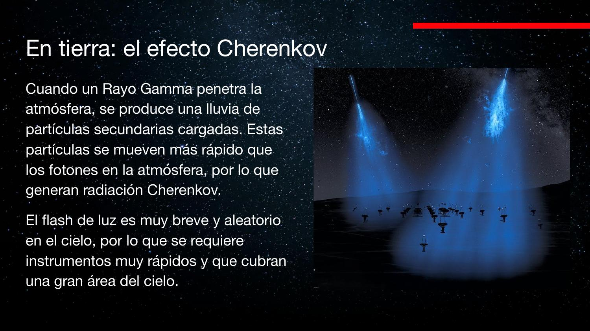
Radiación Cherenkov y CTA
Partícula > c/n en el medio → cono de luz azul. Lluvia atmosférica por γ de alta energía → flash breve. CTA: arreglo de espejos segmentados en desierto (Chile + La Palma); detectores con timing ns reconstruyen dirección del primario.
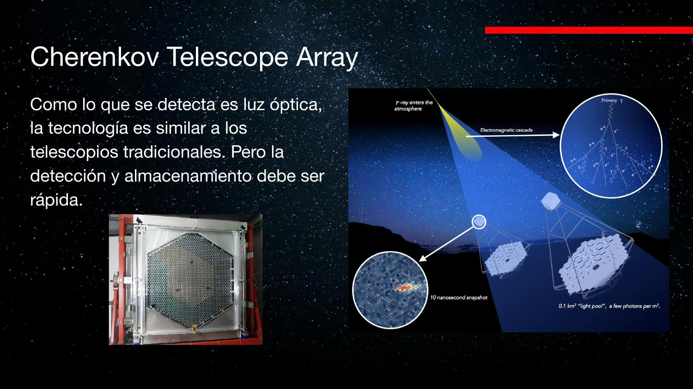
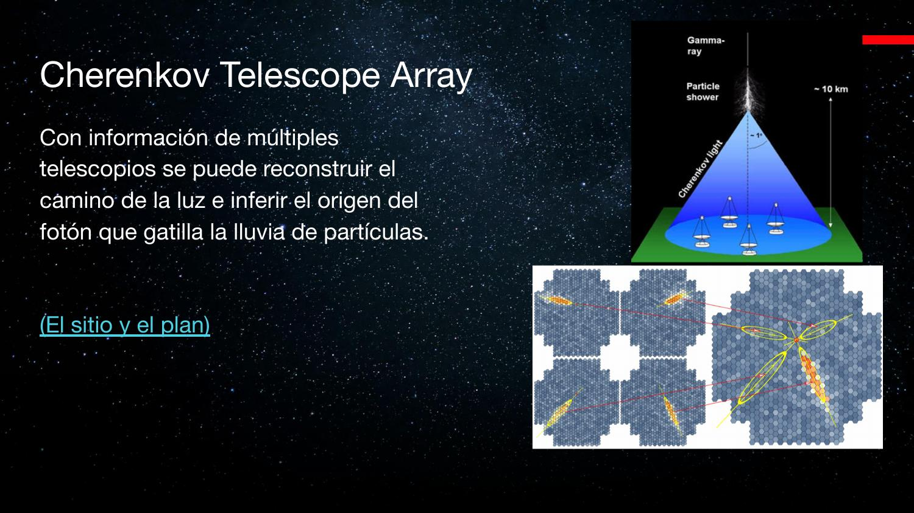
Cielo multibanda
El centro de la Vía Láctea se ve distinto en radio (HI angosto), IR, óptico, X y γ. Astronomía moderna = combinar bandas + mensajeros (GW, neutrinos — próxima clase).

| Concepto | Nota |
|---|---|
| Radio quiet | Zonas sin RFI (celulares, etc.) |
| Interferometría | Resolución ~ λ/B; área = Σ antenas |
| Correlador | Combina fases; HPC en ALMA/EHT |
| Compton | Detectar electrón tras choque γ |
| Cherenkov | Lluvia atmosférica → flash óptico breve |
| CTA | Próxima generación γ desde tierra |
Exámenes de práctica
10 exámenes de 5 preguntas (3 alternativas autocorregibles + 2 escritas).